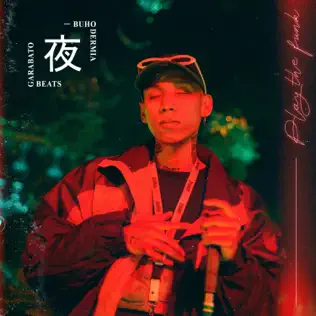

Alcolirykoz
HipHop Group
Alcolirykoz, the Colombian musical powerhouse, stands as a defining force in Medellín's urban sound. Seamlessly blending tropical rhythms, hip-hop beats, and profound lyrics, the collective reshapes the musical narrative with authenticity and innovation. In their latest collaboration with PRIME, they've produced an album that not only pushes the boundaries of Latin urban music but also establishes them as trailblazers in the global scene.
Crudo Means Raw
HipHop Producer
Crudo Means Raw, not only renowned as an exceptional rapper but also revered for his prowess as a producer, stands at the forefront of shaping the auditory landscape. As a versatile artist, he masterfully constructs beats that transcend traditional genres, creating a sonic realm uniquely his own, captivating audiences with his innovative soundscapes and pushing the boundaries of musical expression.
Oblivion's Mighty Trash
HipHop Singer
Oblivion's Mighty Trash embarks on a sonic odyssey that transcends conventional musical boundaries. Through a fusion of experimental sounds, haunting melodies, and an unwavering pursuit of sonic innovation, the band propels listeners into a realm where chaos and beauty coexist. The raw energy and unapologetic nature of Oblivion's Mighty Trash's music create an immersive experience, leaving an indelible mark on the ears of those who dare to venture into their unique auditory universe. In the cacophony of distortion and harmony, Oblivion's Mighty Trash emerges as a powerful force in the realm of avant-garde music, pushing the limits of sonic exploration and inviting audiences to lose themselves in the unpredictable beauty of their soundscapes.

Buhodermia
Urban Producer, singer
Buhodermia, the enchanting musical entity that gracefully navigates nocturnal realms, captivates audiences with its unique blend of soundscape artistry. Through ethereal melodies, hypnotic rhythms, and a touch of mysterious elegance, Buhodermia crafts an auditory experience that transcends the ordinary. The music beckons listeners into a twilight world where the boundaries between reality and imagination blur, guiding them on an immersive journey through the depths of sonic exploration. Buhodermia's sonic tapestries stand as a testament to their ability to capture the essence of the night, evoking emotions that linger long after the last note fades away. As purveyors of atmospheric enchantment, Buhodermia invites you to join them on a musical voyage where each note is a star in the vast canvas of the night sky.
Luis7Lunes
HipHop producer, singer
Luis7Lunes effortlessly wears two hats in the realm of music, embodying the roles of both a masterful producer and a compelling artist. Within the studio, his production finesse knows no bounds as he concocts sonic landscapes that defy genres, seamlessly blending diverse elements into a harmonious tapestry of rhythm and emotion. Simultaneously, as an artist, Luis7Lunes transforms into a lyrical storyteller, weaving verses that intricately mirror the human experience. This duality defines him as a multifaceted creative force, where his production prowess and poetic narratives converge to create an immersive auditory journey that transcends conventional boundaries, leaving an indelible mark on the musical canvas.